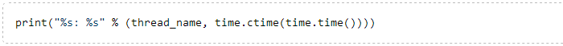
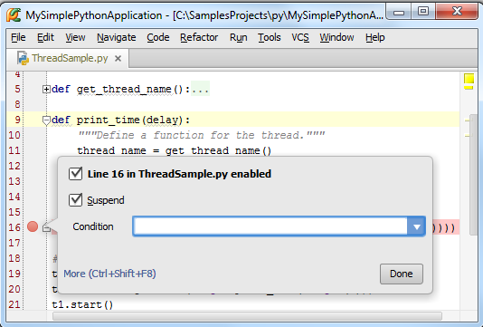
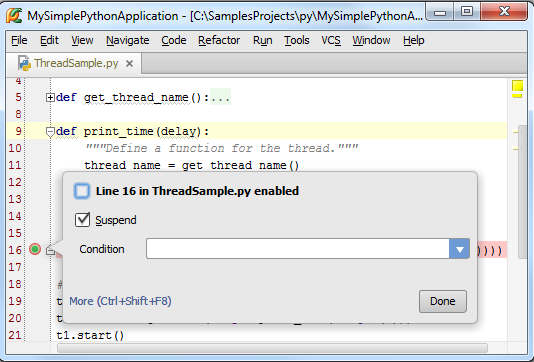
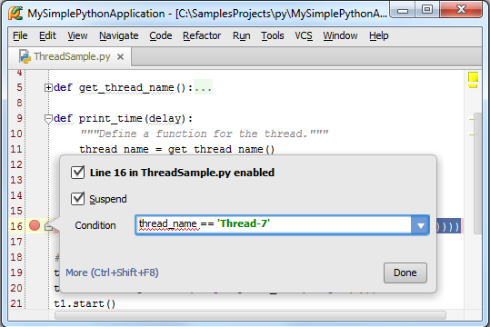
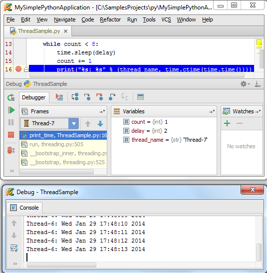
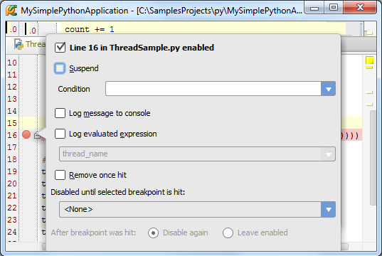
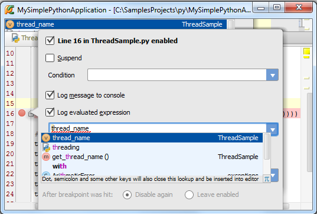
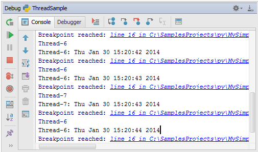
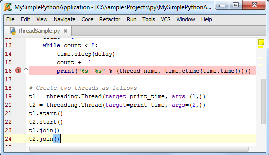
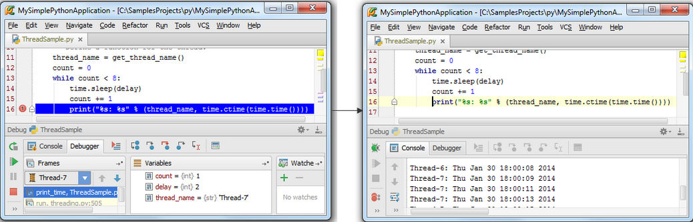

最全Pycharm教程（4）——有关Python解释器的相关配置
最全Pycharm教程（6）——将Pycharm作为Vim编辑器使用
最全Pycharm教程（8）——Django工程的创建和管理
最全Pycharm教程（9）——创建并运行一个基本的Python测试程序
1、准备工作
（1）Pycharm版本为3.0或者更高
（2）至少安装了一个Python解释器
（3）已经创建了一个Python工程
（4）使用Debugger tutorial正在调试处理一个实例
2、什么是断点
Pycharm提供了多种不同类型的断点types of breakpoints，并都有特定的图标icon。本篇教程中我们将详细介绍行断点，即标记了一行待挂起的代码。
3、断点属性
有两种方法来浏览和改变代码属性：
（1）首先，有一个单独的置顶窗口来显示断点属性。
（2）有一个断点对话框 Breakpoints dialog来显示当前应用中所存在的所有断点及其属性。
4、设置断点
选中对应代码行，然后执行下面步骤（二选一）：
（1）单击左边空白槽
（2）按下Ctrl+F8快捷键
这是一个触发开关式的操作，即可以不断的重复操作以移除/添加断点。
作为练习，在第16行设置断点：

5、浏览并改变断点属性
为了浏览单独一个断点的属性，只需右击它即可：

6、启用和关闭断点
首先，清空复选框中的Line 16 in ThreadSample.py enabled选项，此时断点会失效，同时图标中心会变为绿色：

OK，再次勾选复选框，图标恢复原状，断点生效。
7、条件性代码悬挂
假设你希望Pycharm在当前代码处只挂起某一个线程，而其他线程能够正常通过断点，操作非常简单，为断点添加一个条件即可：

接下来我们开始脚本调试（单击工具栏中的按钮），你会看到实际上Pycharm只在当前断点处挂起了Thread-7，而Thread-6正常通过了该断点：

8、如何忽略某些断点？
通常情况下，你只需要在某一个断点处停下来，而希望在其他断点能够正常通过。换句话说就是我们并不希望Pycharm在断点处停止，但我们仍需要保留对应断点来作为标记，如何实现？
在对话框中取消Suspend复选框的勾选，此时断点属性对话框中会显示更详细的信息：

勾选一下两个选项：
（1）Log messages to console：选中这个选项后，Pycharm会在命中该断点后在控制台上显示相关重要信息。
（2）Log evaluated expressions：选中这个选项之后，Pycharm会计算下方输入框中给出的特定表达式并显示在控制台上。

顺便说一下，在下发输入框中输入表达式时Pycharm同样提供了拼写提示功能（Ctrl+空格）。OK，重新运行调试，Pycharm会在调试控制台中显示一下信息：
应用的基本信息。
击中断点时的注册信息
表达式的计算结果

9、浏览所有断点
以上你使用到的所有断点相关的对话框都能帮助你获取断点的大部分重要信息。不过我们通常使用 Breakpoints dialog对话框来完成大部分断点处理工作，它会显示当前项目中的所有断点的属性信息，并方便我们对其进行更改。
我们可以通过以下几种方式来打开这个对话框：
（1）Ctrl+Shift+F8快捷键
（2）在主菜单中选中Run → View Breakpoints
（3）在断点属性快捷对话框中单击More (Ctrl+Shift+F8)
（4）在调试窗口中单击按钮。
10、创建一个临时断点
假设你希望这样一个断点，即Pycharm在命中它之后就将命中的断点删除。Pycharm提供了一个特殊的复选项Remove once hit，默认情况下是不会启动这个机制的。
加入Suspend复选框已经选中，接下来再选中Remove once hit复选框，观察断点的图标的变化：

重新调试，发现Pycharm只会在断点处暂停一次，之后便会将其移除，以保证之后的程序执行不会受到阻碍：
